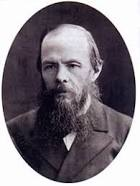

Dostoyevski
Doktor bir babanın oğlu olarak,
11 Kasım 1821’de Moskova’da doğdu. Çocukluğunu Moskova’daki
Marya Hastanesi’nin bir lojmanında, zorba ve alkolik bir baba ile hasta bir anne
arasında geçirdi. Küçük yaştan itibaren edebiyatla ilgilenmeye başladı ve Puşkin, Goethe,
Cervantes gibi yazarlarla tanıştı. 1837’de annesini kaybetti ve ertesi yıl
St. Petersburg’daki Askerî Mühendislik Okulu’na gönderildi. Babasının ani ve
şüpheli ölüm haberini burada aldı. Bu kayıp üzerine bunalıma giren Dostoyevski,
1839 yılında ilk sara nöbetini geçirdi. 1844’te edebiyatla daha yakından ilgilenebilmek
için askerlik mesleğinden istifa etti. 1846’da ilk romanı İnsancıklar yayımlandı ve
edebiyat çevrelerinde büyük ilgiyle karşılandı. Ne var ki ardından gelen çalışmaları
Öteki (1846), Ev Sahibesi (1847), Beyaz Geceler (1848) aynı başarıyı sağlayamadı ve
ilk romanında kendisine destek veren ünlü eleştirmen Belinski’nin alaylarına hedef oldu.
Aşırı duyarlı ve sinirli bir kişiliğe sahip olan Dostoyevski bunun üzerine ruhsal çöküntü
yaşayarak hastalandı. 1849’da Çar I. Nikola’nın baskıcı yönetimine karşı faaliyetlerinden
dolayı tutuklandı ve ölüm cezasına çarptırıldı. İnfazın uygulanmasına dakikalar kala,
cezası Sibirya’da dört yıl kürek mahkûmiyetine çevrildi. Hapiste okumasına izin verilen
tek eser İncil’di. Bu süre boyunca etrafını kuşatan, horlanan ve ezilen kesimi yakından
tanıma fırsatı buldu. 1854’te serbest bırakıldıktan sonra Semiapalatinsk’te zorunlu kışla
hizmetine gönderildi ve subaylığa kadar yükseldi. 1857’de yoksul ve dul Marya Dimitriyevna
İsayeva ile kendisine mutluluk getirmeyen bir evlilik yaptı. Edebiyata dönüşü Amcanın Rüyası
(1859) isimli, mizah öğeleri barındıran Gogolvari öyküyle oldu. Aynı yıl yayımladığı kısa
romanı Stepançikovo Köyü ve Sakinleri (1859) de istediği ilgiyi göremedi.
1860’ta tefrika edilen ve toplum dışına itilmiş kişilerin anlatıldığı
Ölü Bir Evden Hatıralar ile kendini edebiyat çevrelerine tekrar kabul ettirdi.
Tolstoy ve Turgenyev’in övdüğü eser Sibirya’daki mahkûmiyetinden derin izler taşıyordu.
1861’de ağabeyiyle birlikte Vrenja (Zaman) adlı dergiyi çıkarmaya başladı.
Bu dergide Batı karşıtı Slavcı düşüncelerini savunduğu tartışma yazıları yayımladı.
Ardından, eleştirmenlerin sert tepkilerine sebep olan fakat okur tarafından beğeniyle
karşılanan Ezilmiş ve Aşağılanmışlar yayımlandı. Yoğun çalışma temposu nedeniyle sağlığı
bozulan Dostoyevski, doktorunun tavsiyesi üzerine 1862’de hayalini kurduğu Avrupa
seyahatine çıktı. Fransa, İngiltere ve İtalya’yı kapsayan bu kısa gezinin ardından,
1863’te Batı kültürünü eleştirdiği Yaz İzlenimleri Üzerine Kış Notları’nı kaleme aldı.
Aynı yıl yayımlanan bir yazı sebebiyle dergisi kapatılınca yeniden mali krize sürüklendi.
Maddi sıkıntılarından kurtulma umuduyla Almanya, Wiesbaden’e kumar oynamaya ve bir süredir
ilişki yaşadığı Polina Suslova ile buluşmaya gitti. Birkaç yıl sonra yayımladığı Kumarbaz
bu dönemde yaşadığı büyük yıkımları anlatır. 1864’te Rusya’ya döndükten sonra ağabeyiyle
Epoha (Çağ) adında yeni bir dergi çıkardı ve Yeraltından Notlar’ı burada tefrika etmeye
başladı. Aynı yıl karısını ve ağabeyini kaybetti. Bunu izleyen on yıl boyunca, Dostoyevski
art arda Suç ve Ceza (1866), Kumarbaz (1867), Budala (1868), Cinler (1872), Delikanlı (1875)
gibi başyapıtlarını kaleme aldı. Sürekli borç baskısı altında yaşayan ve alacaklıları
tarafından sıkıştırılan yazar, daha hızlı çalışmak için işe aldığı yirmi yaşındaki sekreteri
Anna Grigoriyevna Snitkina’yla, karısının ölümünden üç yıl sonra, 1867’de evlendi.
Bu evlilikten doğan kızı üç aylıkken ölünce derin bir sarsıntı yaşadı ve deliliğin
eşiğine kadar sürüklendi. Bu dönemde yoksulluk, sara nöbetleri ve kumar tutkusuyla
boğuştu. 1874’te solunum yetmezliği tedavisi için bir süreliğine Almanya’ya gitti.
1880’de Puşkin anıtının açılışında konuşma yapmak üzere Moskova’ya davet edildi;
konuşması hem halk üzerinde hem de edebiyat çevrelerinde büyük yankı uyandırdı.
Yazarlık hayatı boyunca işlediği önemli temaları bir araya getirdiği Karamazov
Kardeşler’i ölümüne üç ay kala tamamladı. Dostoyevski 9 Şubat 1881’de S
t. Petersburg’da hayatını kaybetti. Kalabalık bir halk kitlesinin katıldığı cenaze
töreninin ardından, Tikhvin Mezarlığı’na defnedildi.